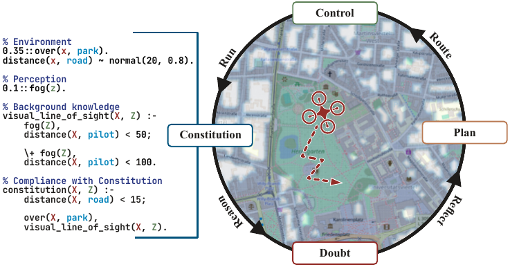
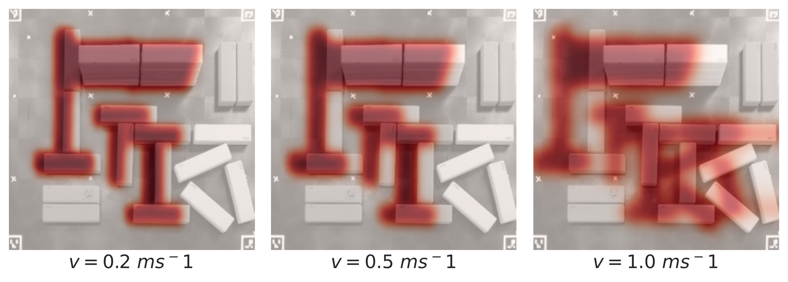
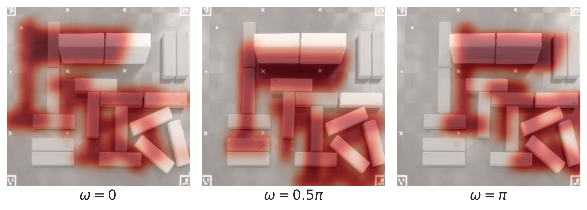
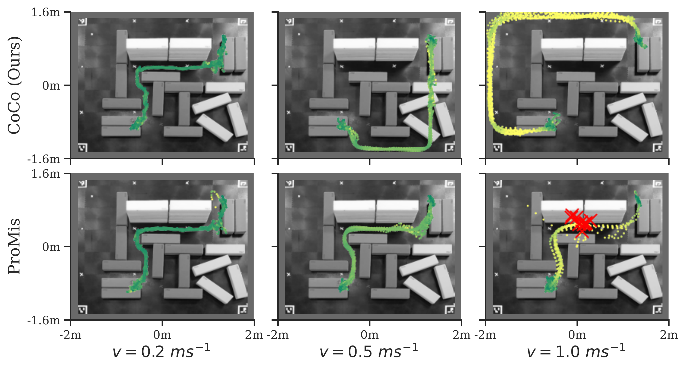
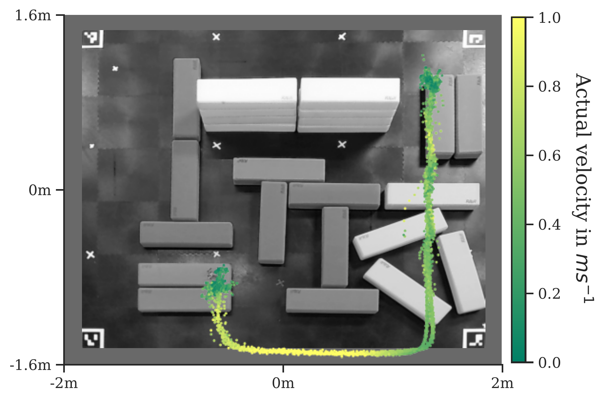

Abstract
Ensuring reliable and rule-compliant behavior of autonomous agents in uncertain environments remains a fundamental challenge in modern robotics. Our work shows how neuro-symbolic systems, which integrate probabilistic, symbolic white-box reasoning models with deep learning methods, offer a powerful solution to this challenge. They enable the simultaneous consideration of explicit rules and neural models trained on noisy data, combining the strengths of structured reasoning with flexible representations. To this end, we introduce the Constitutional Controller (CoCo), a novel framework designed to enhance the safety and reliability of agents by reasoning over deep probabilistic logic programs that represent constraints, such as those found in shared traffic spaces. Furthermore, we propose the concept of self-doubt, implemented as a probability density conditioned on doubt features such as travel velocity, employed sensors, or health factors. In a real-world aerial mobility study, we demonstrate CoCo's advantages for intelligent autonomous systems to learn appropriate doubts and navigate complex, uncertain environments safely and compliantly.

Constitutional Control: the agent's neuro-symbolic Constitution encodes traffic rules and feeds a doubt-aware planner and controller.

As target velocity increases, the doubt density widens the risk buffer around obstacles — the agent becomes more conservative at speed.

Varying heading angle rotates the doubt density, shifting which regions appear risky — CoCo adapts its safety margin to the direction of travel.

At high velocity, the ProMis baseline greedily routes through the center and crashes (red ✕). CoCo's doubt model selects a safer detour.

When velocity is unconstrained, CoCo dynamically slows near restricted zones and accelerates on open segments — safe, compliant, and time-effective.
BibTeX
@inproceedings{kohaut2026coco,
title={The Constitutional Controller: Doubt-Calibrated Steering of Compliant Agents},
author={Simon Kohaut and Felix Divo and Navid Hamid and Benedict Flade and Julian Eggert and Devendra Singh Dhami and Kristian Kersting},
booktitle={IEEE/RSJ International Conference on Intelligent Robots and Systems (IROS)},
year={2026}
}